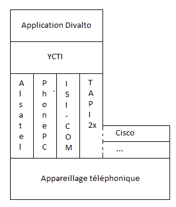
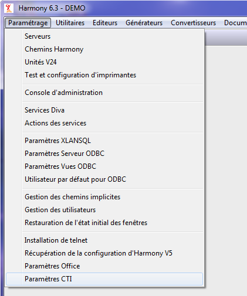
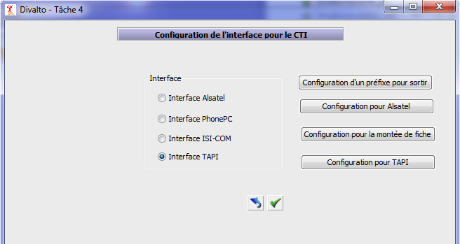
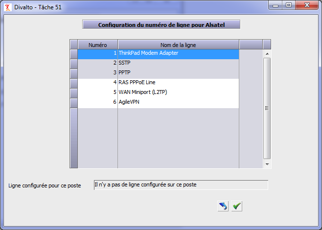
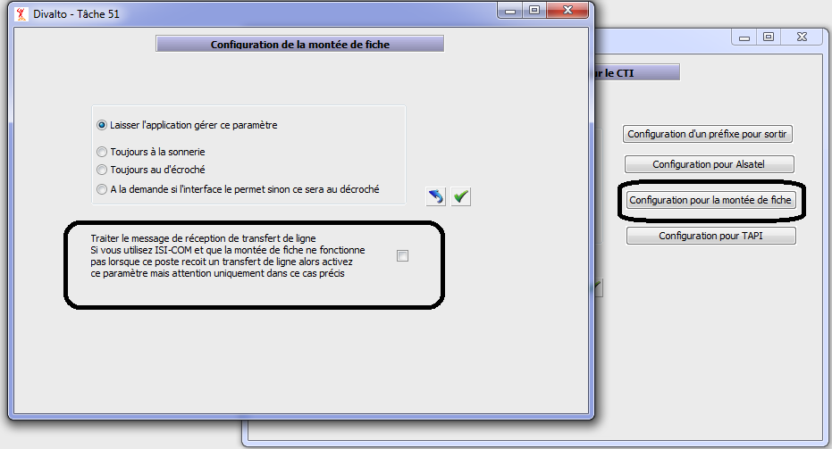
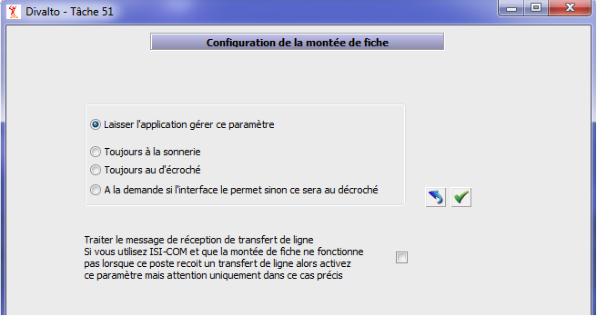
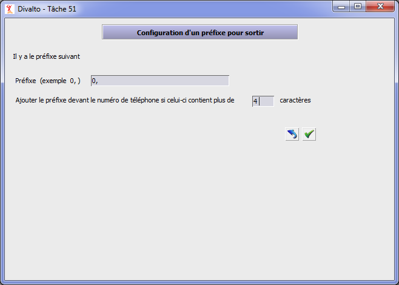

CTI est un sigle signifiant Couplage Téléphonie - Informatique. Cette rubrique décrit la configuration et le paramétrage de l'interface entre Divalto et un appareillage téléphonique, cette interface étant assurée par le module YCTI :

Choix du type d'interface
Lancez le choix « Paramétrage : Paramètres CTI » du menu Harmony.dhop :

Puis sélectionnez le type d'interface en fonction du matériel téléphonique utilisé :

Interface Alsatel 
Remarque : Ce matériel nécessite l'installation préalable du composant AlsacallX sur votre ordinateur :
Produit : AlsaCallX de la société Alsatel (ocx basé sur le produit PIMphony d’Alcatel).
Alsatel, département ingénierie et réalisation, 11 rue Jean Monnet, bp 20, 67201 ECKBOLSHEIM Cedex 02.
Cliquez sur le bouton "Configuration pour Alsatel" et paramétrez le numéro de ligne téléphonique :
Interface PhonePC
Remarque : Ce matériel nécessite l'installation préalable du produit PhonePC sur votre ordinateur :
Produit : PhonePC de la société Micro-Concept.
Micro-Concept, 6 rue Le Corbusier, 95198 Goussainville Cedex.
L'installation de PhonePC installe également l'ocx utilisée par Harmony. Il n’y a d'ailleurs aucun paramétrage à faire dans Harmony (tout le paramétrage s'effectue dans PhonePC).
Interface ISI-COM
Remarque : Ce matériel nécessite l'installation préalable du produit ISI-COM sur votre ordinateur :
Produit : pcb de la société ISI-Com.
ISI-Com, 21 Rue de la Morinerie, 37700 St Pierre des Corps, TOURS.
Après l'installation du produit de ISI-COM, installez le composant qu'utilise Harmony :
Copiez les fichiers qui se trouvent dans le répertoire ISI-COM du cdrom Harmony dans x:\Divalto\Sys.
Lancez InstallPcb.bat et InstallPcb.dhop.
En principe, il n’y a pas de paramétrage à faire dans le menu Harmony (tout le paramétrage s'effectue dans ISI-COM). Toutefois : 
Remarque concernant la fonction de montée de fiche : ISI-COM sait faire du transfert de fiche. Lorsqu’on transfère un appel à un autre correspondant, un bouton dans la fiche tiers permet de demander que le poste distant reçoive l’identifiant de la fiche du tiers en cours au lieu du numéro de téléphone de l’appelant. Ce mode fonctionne généralement sans paramétrage.
S'il ne fonctionne pas avec votre Pabx, cochez la case ci-après (bouton "Configuration pour la montée de fiche") :
Interface TAPI
Voir le livre Connecteur Divalto pour TAPI 2.0 qui lui est consacré.
Autres paramétrages
Configuration de la montée de fiche (bouton "Configuration pour la montée de fiche") :

Si l'application gère elle-même quand il faut monter la fiche, sélectionnez le bouton "Laisser l'application gérer ce paramètre".
Remarque : La montée de fiche de l'application Divalto est dans de cas.
Sinon, sélectionnez le bouton correspondant à l'événement choisi pour monter la fiche (à la sonnerie, au décroché, à la demande du CTI si l'interface l'autorise -par exemple, l'interface Alsatel ne le permet pas-).
Ajout automatique d’un préfixe lors de la composition d’un appel (bouton "Configuration d'un préfixe pour sortir") :
